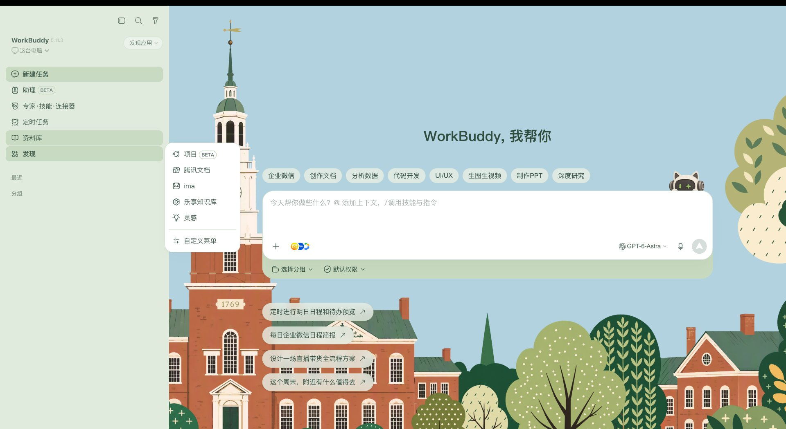
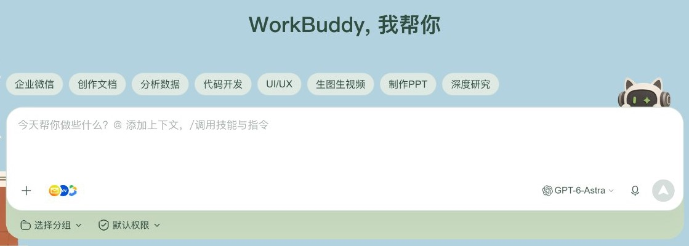

AI时代下的
人机协同
用 WorkBuddy 上手：说清需求、核对结果、沉淀做法
今天不做功能清单。我们从一份普通的例会记录出发，
把一件工作交代清楚、验收好，再把可靠的方法留下来。
你希望 AI 接手哪件事？
先想你自己的一件工作，而不是先看工具有多少功能。
只显示即时总数，不记录任何个人材料。图表从 0 开始，未点击时为空。
今天把这份记录变成可用成果
同一份材料，从第一页用到最后一页。
张工位调整，最后弄完了没有？
李弄完了，靠窗那几张换了。
小刘收了，九十多份吧，具体我没细数…
陈两万是去年的吧，今年好像砍了一点…
张那再定，群里问一圈吧。
原材料里下次例会时间没定，所以只写征询草稿；不补一个日期让任务看起来完成。
从写规则到从数据中学习
模型给出的回答，不全是人一条条预先写好的。
人写明确规则
如果……就……。每一步都由人先想好、先写死。
从数据里学规律
不再逐条写规则，让模型从大量例子里学出模式。
按指令与材料生成
先有预训练打底，再用示范与偏好反馈帮助遵循指令。
根据上下文生成，不等于查证事实
它擅长接着写「像样的一段」，但「像样」不是「查过」。
学到语言里的规律
从大量文本中学「什么接着什么比较常见」。
更愿意遵循指令
示范与偏好反馈，让它更贴合人的要求。
还会读材料、用工具
你提供的原文与要求，会进入这一次回答。
表达流畅，结果仍要核对
减少含糊与跑题
明确的交付格式、边界与验收标准，能让结果更贴近用途。
能力还因任务而不同
有实验发现：在合适任务上 AI 辅助带来收益，在另一些任务上表现反而变差。
从回答问题，到调用工具完成任务
模型与「能做事的智能体」不是同一层。
AI 执行，人在哪里参与？
不用「自动化等级」来分类，看三个具体位置。
据中国经济新闻网 2026 年报道，郭毅可强调让机器承担事务性工作，人参与设定目标、价值判断与承担责任。
E04 · 张一鸣，中国经济新闻网，2026-07-30 ↗一次协作，三个动作
这也是接下来 38 分钟现场演示的路线。
说清需求
把用途、边界和验收写具体
核对结果
回原文查依据、遗漏与补全
沉淀做法
留下方法卡，换材料再试
开始前：材料、权限、去向
先判断能不能交，再决定怎么交。
材料能不能交
按单位规定判断。真实工作材料先脱敏、先获准；脱敏不等于自动批准上传。
给多少权限
看清运行位置与默认权限；在本机运行不等于所有处理都不联网。涉及额外工具、外部资料或上传，先停下来问。
交出去去哪里
只出草稿；不发消息、不删文件、不付款、不自动建日程，也不公开发布演示产物。
界面里的运行位置、工作模式、权限是几组不同设置，发送前对着屏幕指认，本页不展开菜单。
认识界面，发起第一个任务
不用先学完菜单，只认这一次任务会用到的四个位置。

1 2 3
输入区局部本页送入模型的内容 展开 / 复制
帮我整理这份例会记录。
以下为虚构材料，仅在当前任务中生成供审核的文本。 不修改原文、不发送消息、不创建日程或定时任务、不删除文件、不付款。 只处理我提供的材料；涉及额外工具权限、外部资料、上传或分享时先停止并向我确认。
说清需求：交付要求的六个格子
「帮我整理一下」和「我要拿它做什么」，差别在验收标准。
任务目标
整理成会后可核对、可推进的成果
对象
部门同事与会议主持人
材料
只使用我提供的这段正文
边界
不补年份、姓名、金额、地点或链接
输出
待办清单＋待确认事项＋征询草稿
验收
每条附原文依据；未提供的标「待确认」
按验收标准，再做一次
同一份材料，补上交付要求；不是故意给一个坏提示词。
请只依据我提供的例会记录正文，输出三部分： 1. 待办清单：事项、责任人、时间要求、当前状态、原文依据。 2. 待确认事项。 3. 不超过 150 字的「下次例会时间征询消息」草稿， 不是正式会议通知。 未提供的信息标「未提供 / 待确认」；保留原文中的相对 日期；不补年份、姓名、预算、地点或链接。 时间尚未确定，不要替我拟定会议时间。 （另附本页所示的公共安全约束。）
核对结果：四个问题
验收不是「找错误」，是逐条确认能不能用。
有依据吗？
输出 → 回原文：这句话能在材料里找到吗？
有遗漏吗？
原文 → 看输出：重要事项有没有被漏掉？
有擅自补全吗？
没说的日期、金额、人名，有没有被补上？
适合现在使用吗？
这是草稿、建议，还是可以直接交付？
回到原文，逐项验收
左边是原文，右边留给现场的真实输出；不预置 AI 答案。
能用到哪一步，由人确认
把结果分成三种状态，比把它「改到完美」更有用。
有明确原文依据
- 工位调整已完成
- 下一次活动农庄方向定了
- 小刘承接拉群、了解讲者意愿
材料里本就没有结论
- 反馈问卷的准确份数
- 本年度活动预算金额
- 下次例会的具体时间
由 AI 提出、供人审核
- 例会时间征询消息草稿
- 按事项整理的结构
- 可再核一遍的表述
沉淀做法：先留下一张方法卡
把这次「怎样交代、怎样验收」写下来，下次换材料就能用。
把一段讨论记录整理成可核对的成果
只给正文；说明是否允许使用外部资料
列事项 → 分状态 → 写待确认 → 生成草稿
每条有依据；不补未提供信息；可直接审阅
要求额外权限、外部上传、发送消息或删除文件时，先停下向人确认
偏好、做法、资料，分别存放
三张并列的卡，不是三道必走手续。
偏好与背景
作为上下文参与后续任务；可更正、删除或关闭。
封装好的工作流
把做法做成可调用的能力；需检查来源、权限与外发路径。
材料与成果
保存文件、把材料添加到任务；个人与团队权限分开。
换一段输入，试用刚才的方法
方法能复用，当前的事实不能机械照抄。
午间交流活动协调：小周负责收集大家想听的主题，周五前交清单。 小林负责整理收到的主题；活动的具体日期和场地还没定。 大家同意先征询意向，再确定安排。
主路径：把方法卡作为参考加入任务。技能创建是实测通过后的条件分支，不是本场必演项。
先可复用，再考虑自动运行
定时任务不是「跑满三次」就能通关。
每次拿到的材料结构一致
运行位置、外发路径都已确认
缺输入就停止，不硬凑结果
输出仍要有人检查再使用
不只会议：把方法带回日常任务
换的是材料，不换的是三个动作。
通知与消息草稿
表格与台账汇总
活动方案初稿
上面是讲者为说明方法迁移编写的情境示例，不是真实客户案例，也不代表效果承诺。
先看任务怎么变，再谈岗位怎么变
一个岗位包含很多任务，变化通常先发生在任务层。
看「潜在暴露」，不是失业率
ILO—NASK 2025 研究关注岗位任务被生成式 AI 影响的程度，并强调工作转变，而非全岗位自动替代。
不承诺，也不淡化
不写「四分之一岗位会消失」，也不保证任何人的岗位安全；适应成本不该只由个人承担。
省下时间，也保留判断与责任
留下的是判断、参与和责任。
能被核对，才算成果
有依据、有状态、有停止条件，比写得漂亮更重要。
授权与外发由人把关
发送、删除、付款这类撤不回的动作，不交给自动执行。
不是从流程里消失
省下的时间用于判断什么值得做，以及把方法教给下一个人。
从手边一件事开始
不用一次改变全部工作，选一件低风险的先做完。
选一件低风险任务
材料可公开或虚构，结果不直接外发
写清交付要求
用六格把用途、边界和验收说明白
核对并留下方法
按四问验收，把做法写成方法卡
二维码将在发布并验证最终网址后启用；本页链接指向本站内的公开文本材料。